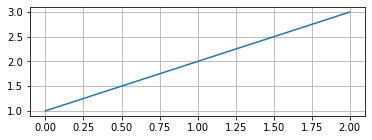

Inline variable evaluation (eval)
Contents
Inline variable evaluation (eval)#
0.15.0 新版功能.
The eval submodule allows you to insert code variables directly into the text flow of your documentation.
Use of eval requires that the notebook execution mode is set to inline, since the variables are evaluated by the notebook kernel.
For example, using the top-matter:
---
file_format: mystnb
kernelspec:
name: python3
mystnb:
execution_mode: 'inline'
---
Basic example#
Below we set a variable v1 within a code cell.
v1 = "My variable"
Using the eval role, we can insert the variable v1 into the text of a paragraph:
{eval}`v1` -> My variable
If we update the variable, we can see the change reflected in subsequent evaluation:
v1 = "My new variable"
{eval}`v1` -> My new variable
重要
Variable names must match the regex [a-zA-Z][a-zA-Z0-9_]*
Inserting different output types#
Any variable type can be inserted into the text flow using the eval role,
and the most suitable output type will be used, based on the output format (see 输出 MIME 优先级 for more information).
For example:
import ipywidgets as widgets
slider = widgets.IntSlider(value=5, min=0, max=10)
An inline slider ({eval}`slider`):
You can also use the eval directive to insert variables as blocks:
import matplotlib.pyplot as plt
myplot, ax = plt.subplots(figsize=(6, 2))
mean = 2.0
ax.plot([1,2,3])
ax.grid()
plt.close()
using:
```{eval} myplot
```
gives:
Embedding outputs in figures#
The eval:figure directive allows you to embed outputs in a figure,
with an optional caption and other formatting options.
For example, we can embed the output of the above plot in a figure:
```{eval:figure} myplot
:name: myplot
My plot with a mean value of {eval}`mean`.
```
which gives:
My plot with a mean value of 2.0.#
That can be referenced with {ref}`myplot`: My plot with a mean value of 2.0.
The following directive options are available:
Option |
Type |
Description |
|---|---|---|
figwidth |
length or percentage |
The width of the figure |
figclass |
text |
A space-separated list of class names for the figure |
name |
text |
referenceable label for the figure |
alt |
text |
Alternate text of an image |
height |
length |
The desired height of an image |
width |
length or percentage |
The width of an image |
scale |
percentage |
The uniform scaling factor of an image |
class |
text |
A space-separated list of class names for the image |
align |
text |
left, center, or right |